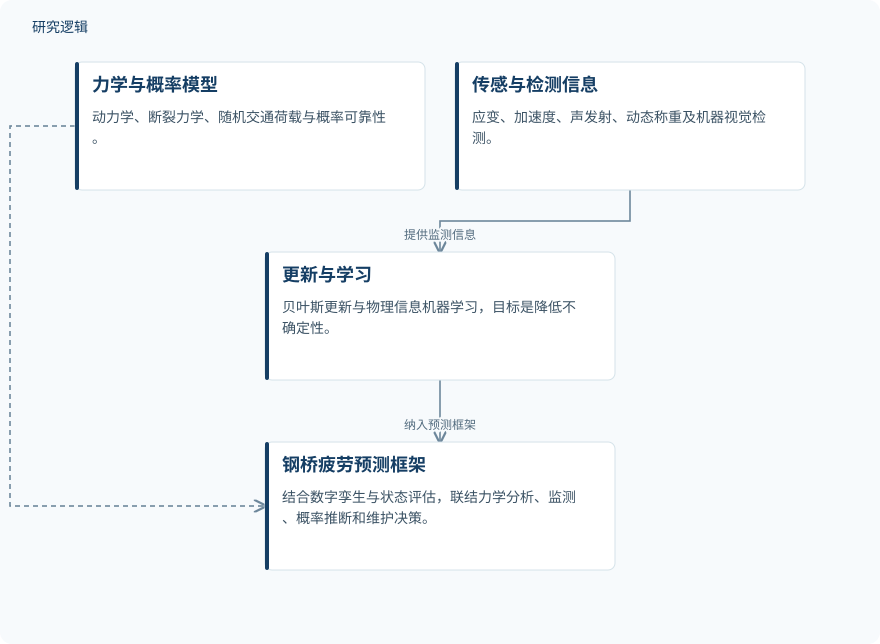

摘要解读
强动态荷载下钢桥疲劳失效预测：断裂力学、概率分析与数字孪生框架
Predictive Models of Fatigue Failure in Steel Bridges under Severe Dynamic Loading: An Advanced Fracture-Mechanics, Probabilistic, and Digital-Twin Framework
解读更新 2026-10-17 11:44 · 依据公开摘要整理，未核验全文细节
钢桥疲劳裂纹通常逐步扩展，最终失效却可能突然发生。这项研究提出将动力学、断裂力学、监测与概率推断结合的预测框架，其阅读价值在于理解强动态荷载下，疲劳评估为何不能只依赖静态应力幅或单一算法。
文章目录
渐进裂纹为何可能导致突然失效
摘要指出，钢桥疲劳裂纹常起始于焊接接头、几何不连续处、螺栓连接、正交异性桥面板、横隔板连接部位及腐蚀损伤区域。当亚临界裂纹达到临界尺寸，且应力强度因子超过材料断裂韧度时，渐进损伤的末期可能转为突然破坏。
强动态荷载使这一问题更加复杂：结构惯性、共振、交通诱发振动、冲击、混合型断裂、腐蚀、残余应力和实际荷载谱的不确定性同时作用。因此，传统静态应力幅方法可能不足以描述相关失效风险。
把动力响应、裂纹扩展与可靠性纳入同一框架
研究提出耦合结构动力学、弹性与弹塑性断裂力学、随机交通荷载、概率可靠性、传感器状态评估及数字孪生的预测框架。核心数学模型结合动力运动方程、雨流计数得到的应力谱、非线性疲劳损伤累积、基于 Paris–Erdogan 和 Forman 方程的裂纹扩展规律，以及极限状态可靠性函数。
框架还引入贝叶斯更新与物理信息机器学习，拟利用应变计、加速度计、声发射传感器、动态称重系统和机器视觉检测信息降低不确定性。这里的“不确定性降低”是摘要陈述的方法目标，并非已给出量化验证的效果。
依据摘要整理的预测框架关系示意


仅概括摘要明确描述的模型耦合与监测更新关系，不表示论文原图、具体计算顺序或已验证效果。
下载 SVG图示关系说明
实线表示相邻阶段的信息流，虚线表示跨阶段联系或反馈。
力学与概率模型 → 钢桥疲劳预测框架：耦合纳入；传感与检测信息 → 更新与学习：提供监测信息；更新与学习 → 钢桥疲劳预测框架：纳入预测框架
摘要强调多层协同，而非单算法胜出
摘要给出的主要结论是：可靠的疲劳预测不应依靠单一预测算法，而应结合力学分析、连续监测、概率推断和保守的维护决策。这是作者对预测体系组成的判断；摘要没有报告可用于比较算法优劣或预测精度提升的定量结果。
框架已被描述，验证范围仍待核实
仅凭本次完整摘要，无法判断研究涉及多少座桥梁、多少试件或监测样本，也无法确定荷载与材料参数范围、对照方法、误差指标以及现场验证情况。摘要未报告这些信息，不等于论文没有开展相关工作；当前也不能据此认定该框架已优于既有方法，或已验证其工程维护效果。
阅读启发：关注监测如何约束失效判断
阅读启发：对智能运维与疲劳可靠性研究，更值得进一步核对的是，监测信息具体更新哪些模型参数或不确定性，物理信息机器学习如何与裂纹扩展规律衔接，以及可靠性判断如何关联保守维护决策。这些问题来自摘要所列模块之间的关系，属于后续阅读方向，而非本文已被证实的结论。
以上为本站阅读启发与建议，不是论文已验证的结论。